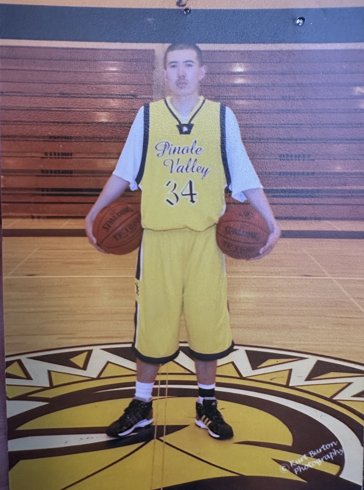

Coaching • Athletics • Leadership • Development
Coaching & Athletics
A coaching and athletic career spanning high school varsity sports, collegiate tennis, athletic administration, community recreation, Junior Team Tennis, and competitive playing experience. This page serves as a deeper record of the programs, teams, athletes, and competitive environments that have shaped my work in sport.
Athletic Career Snapshot
Experience across coaching, athletic administration, community program development, and competitive athletics.
Coaching
Varsity basketball, varsity tennis, varsity cross country, collegiate tennis, community recreation, and USTA Junior Team Tennis.
Athletic Leadership
Multi-sport administration involving coaches, competition, facilities, schedules, postseason operations, and program development.
Program Building
Experience rebuilding programs, creating community opportunities, securing grant support, and developing sustainable pathways for participation.
Playing Career
Multi-sport high school athlete and collegiate tennis player who returned to college competition 14 years after an initial season.
Coaching Record Book
Selected team, individual, postseason, program-building, and professional accomplishments from my coaching career.
Basketball
Girls' Varsity Basketball
Richmond High School • Head Coach • 2015–2024
Led and developed the girls' varsity program through postseason qualification, league contention, improved competitive performance, and the development of a TCAL regular-season co-championship team.
-
2024TCAL Regular-Season Co-Champions Built and coached the varsity program to an 8–2 overall record and 3–0 start in league play, including wins over the eventual TCAL regular-season co-champion and TCAL playoff champion. The coaching staff carried the program through the remainder of the season, finishing 16–8 overall and earning a TCAL regular-season co-championship.
-
2024TCAL League Playoff Runner-Up
-
2023TCAL Regular-Season Runner-Up
-
2023TCAL League Playoff Runner-Up
-
2021A Season Lost to the Pandemic Coming off the program's first NCS appearance since 2006–07, a large returning senior class was robbed of the opportunity to fully pursue what had the potential to be a special season. COVID-19 disruptions resulted in a partial schedule with no official league championship or postseason competition, though Richmond finished first among the TCAL teams that participated.
-
2020North Coast Section Playoffs — No. 15 Seed Led the varsity program to its first and only NCS appearance since the 2006–07 season.
-
2020TCAL League Playoff Semifinalist
Basketball
Boys' Varsity Basketball
Richmond High School • Head Coach • 2021–2022
Stepped into the varsity program and produced a winning season during a lengthy period of competitive difficulty for Richmond boys' basketball.
-
202211–8 Overall Record The program's only winning season since 2006.
Tennis
Girls' Varsity Tennis
Richmond High School • Head Coach • 2016–2023
Developed a conference championship program producing team, singles, and doubles titles, multiple North Coast Section appearances, and individual postseason qualifiers.
-
2023TCAL Championship Sweep Captured the TCAL team, singles, and doubles championships in the same season.
-
2023NCS Team Playoffs — No. 16 Seed
-
2023TCAL Singles Champion / NCS Participant
-
2023TCAL Doubles Champions / NCS Participants
-
2022TCAL Team Runner-Up
-
2022TCAL Doubles Champions / NCS Participants
-
2022NCS Girls' Tennis Honor Coach Award Recognized by the North Coast Section for leadership and contributions to girls' tennis.
-
2019TCAL Singles Champion / NCS Participant
Tennis
Boys' Varsity Tennis
Richmond High School • Head Coach • 2016–2023
Helped rebuild a long-dormant program into a league championship team while developing multiple singles and doubles champions and North Coast Section qualifiers.
-
2023TCAL Singles Champion / NCS Participant
-
2022TCAL Team Runner-Up
-
2022TCAL Doubles Champions / NCS Participants
-
2019TCAL Team Co-Champions First league championship for the boys' tennis program since 1939.
-
2019NCS Team Playoffs — No. 16 Seed
-
2019TCAL Doubles Champions / NCS Participants
-
2017USTA Hispanic Outreach Grant Secured grant support to expand tennis participation and program-development opportunities.
Running
Boys' & Girls' Cross Country
Richmond High School • Varsity Coach • 2018–2019
Coached varsity cross country with an emphasis on conditioning, athlete development, competition preparation, and team operations.
Earlier Experience
Additional Coaching Roles
Earlier coaching experiences provided a foundation for later work in varsity athletics, collegiate coaching, and community programming.
-
2013–2016Varsity Boys' & Girls' Tennis Coach Pinole Valley High School
-
2011–20127th & 8th Grade Boys' Basketball Assistant Coach Sutter Middle School • Volunteer
Collegiate Coaching
Coaching and instructional experience within California community college men's tennis.
Diablo Valley College
Men's Tennis
Assistant Coach
Contributed to collegiate player development, instruction, recruiting, practice preparation, competition, scheduling, and program operations during a period of strong regional and state performance.
-
2016Big 8 Singles & Doubles Conference Champions
-
2016No. 3 Northern California / No. 7 California Highest regional and state rankings achieved during my tenure.
-
2015No. 5 Northern California / No. 15 California
-
2015ITA Junior College Assistant Coach of the Year — Region I, California Recognized by the Intercollegiate Tennis Association.
-
2014No. 7 Northern California
The men's tennis program made three Northern California postseason appearances during my coaching tenure.
Athletic Administration
Selected program-wide results achieved during my tenure as Athletic Director at Richmond High School. These accomplishments reflect the work of the school's coaches, athletes, and athletic programs and are separate from my direct coaching record.
Boys' Soccer
- TCAL Regular-Season Champions — 2022, 2023
- TCAL League Playoff Champions — 2022
- NCS Division II Runner-Up — 2022, 2023
- NCS No. 2 Seed — 2022
- NCS No. 3 Seed — 2023
- CIF State Regional Quarterfinalist — 2022, 2023
- CIF State Regional No. 2 Seed — 2022
- CIF State Regional No. 8 Seed — 2023
Girls' Soccer
- TCAL Regular-Season Champions — 2022
- TCAL League Playoff Champions — 2022
- NCS Participant — No. 16 Seed — 2022
Girls' Volleyball
- NCS Participant — No. 15 Seed — 2023
Badminton & Wrestling
- NCS Badminton Doubles Participants — 2022, 2023
- NCS Wrestling Participant — 220 lb. Weight Class — 2022
Coordinated more than 220 junior varsity and varsity athletic events annually while overseeing scheduling, facilities, logistics, communication, coaching support, and postseason operations. During my period of athletic leadership, the overall varsity program win rate increased from 20.5% to 47.8%.
Community Sport Programming
Community-based programming has been a recurring part of my coaching career, creating additional opportunities for youth athletes outside traditional school seasons through tennis, Junior Team Tennis, and independently organized AAU basketball.
Current Programming
Community Tennis & Junior Team Tennis
My current community programming centers on youth and adult tennis instruction, competitive team development, and USTA Junior Team Tennis. What began as a single Junior Team Tennis team has developed into a broader community tennis program with multiple teams under my coordination.
-
CurrentCanyon Trail Tennis Community-based tennis programming providing youth and adult instruction, player development, match play, and competitive opportunities.
-
CurrentJunior Team Tennis — 1 Team → 3 Teams Started the original Crouching Tiger Tennis Junior Team Tennis program and transitioned it into Canyon Trail Tennis, growing from one team to three teams under my coordination.
-
2025USTA East Bay/Tri-Valley 10U Orange Ball Champions Coached the Junior Team Tennis team to the East Bay/Tri-Valley championship and advancement to sectional competition.
2018–2023
Community AAU Basketball
Before expanding my community programming into tennis, I developed independently organized AAU basketball programs that operated alongside and complemented the high school programs I was coaching. These programs provided additional off-season instruction, competition, and player development for local youth, including athletes who otherwise may not have had access to organized club basketball.
-
2022–2023West COCO Athletics My community basketball programming began with Richmond Tenacity, an independently organized AAU program created to provide additional off-season training, competition, and player development alongside the high school programs I was coaching. After programming was disrupted by the COVID-19 pandemic, the concept returned and was rebranded as West CoCo Athletics, continuing the same broader mission of expanding access to organized basketball opportunities for local youth.
-
2018–2021Richmond Tenacity Founded and operated a community-based AAU basketball program that complemented my high school coaching work by providing additional off-season training, team competition, and development opportunities for youth who may not otherwise have had access to club basketball.
Playing Career
My perspective as a coach and athletic leader is also informed by my own experience as a multi-sport athlete and collegiate tennis player.
-
2025No. 1 Singles & Doubles Player Final No. 1 singles and doubles player in Diablo Valley College men's tennis program history.
-
2025Big 8 Conference — No. 8 Singles
-
2025Big 8 Conference — No. 6 Doubles
-
2025CCCAA Northern California — No. 18 Singles
-
2025CCCAA Northern California — No. 13 Doubles
-
2025State Playoff Participant — Singles & Doubles
-
2025Big 8 Conference Tournament Quarterfinalist Reached the quarterfinals in both singles and doubles.
-
2011Coaches Award

-
2006–2009Varsity Tennis
-
2008–2009Varsity Cross Country North Coast Section participant.
-
2008–2009Varsity Basketball Member of a No. 5 seeded North Coast Section team that advanced to the NCS quarterfinals.
-
2008–2009NCS Scholar Athlete